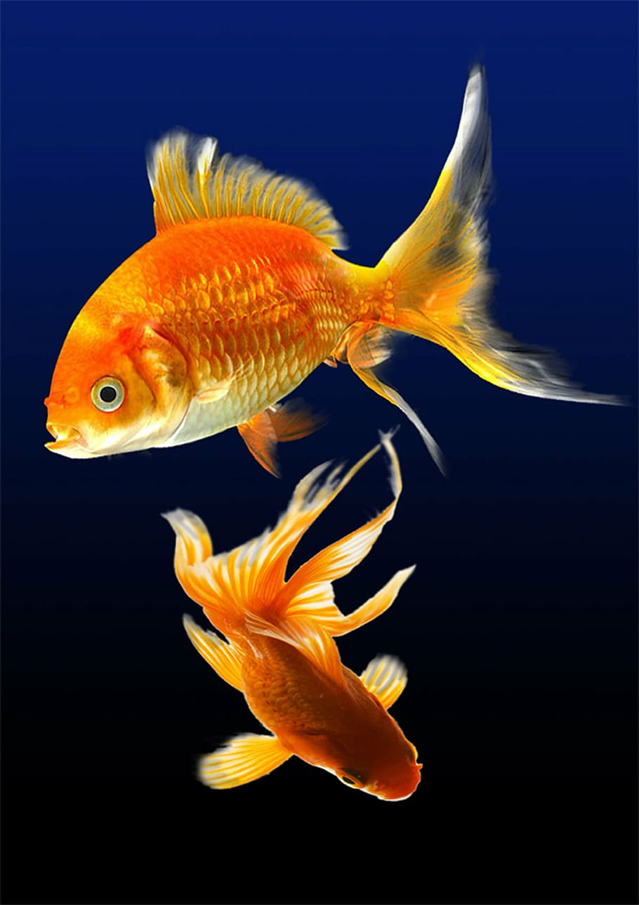

Llovía mucho cuando este capítulo empieza. Empieza con esto para explicar la razón que la familia no podía trabajar. Estaban viviendo en unas cabañas y a Francisco le gustaba pasar el tiempo mirando al pez del vecino por la ventana. Su madre lo llamaba “El ángel de oro” porque era un pez dorado. El padre de Francisco estaba preocupado porque no podía trabajar por la lluvia. El siguiente día, mientras Francisco caminaba a la escuela, encontró otro niño que se llamaba Miguel. Miguel llevó Francisco a la oficina de la escuela y tradujo las preguntas que el director de la escuela lo preguntó a Francisco. Francisco y Miguel empezaron a juntarse más y se convirtieron en amigos. Cuando caminaban al campamento, pisaban en los charcos que eran dejados por la lluvia y imaginaban que eran gigantes pisando en lagos. El autor incluye una historia de Francisco cayendo en el agua, y ambos empezaron a reír. Esta parte muestra cómo era la relación entre los Francisco y Miguel. Cuando llegaron al campamento, Francisco notó que su familia no estaba en su cabaña porque estaban buscando más trabajo e invitó a Miguel a ir a dentro. Miguel dijo que necesitaba ir a su cabaña primero, pero que lo verá en un rato. Francisco se fue a su cabaña solo y miró al pez de su vecino por la ventana. Preguntó a el mismo que si el pez se sentía triste de estar solo. Esta parte reflexiona cómo siente Francisco cuando no está con nadie. Después encontró Miguel otra vez, cerca de un arroyo. Agarraron ramas para hacer cañas para atrapar peces en el arroyo. Miguel dijo que traerá más cosas el siguiente día para que pudieran terminarlos. El siguiente día, Francisco buscó a Miguel para caminar a la escuela con él, pero no lo encontró. A regresar de la escuela, Francisco se fue a la cabaña de Miguel para ver si estaba ahí, y estaba completamente vacía. Francisco dice que su “… corazón se me fue al estómago.”. Un día después, cuando llovió mucho esa noche, Francisco vio que había muchas peces grises en los charcos. Agarró una cubeta y trató de recogerlos todos y ponerlos en el arroyo, pero eran demasiados para él. Rezó por los peces y trajo uno en la cubeta a la cabaña de su vecino que tenía el pez dorado. Tocó la puerta, pero nadie estaba ahí. Dejó la cubeta frente de la puerta y esa noche cuando vio el pez dorado por su ventana, el pez dorado nadando al ledo de un pez gris. La mañana siguiente, puso su “caña” en el arroyo y lo dejó flotar. Este capítulo enseñó a Francisco que había unas cosas que estaban afuera de su control, pero podía reaccionar en una manera buena.
